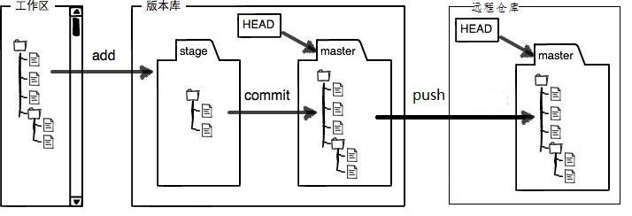
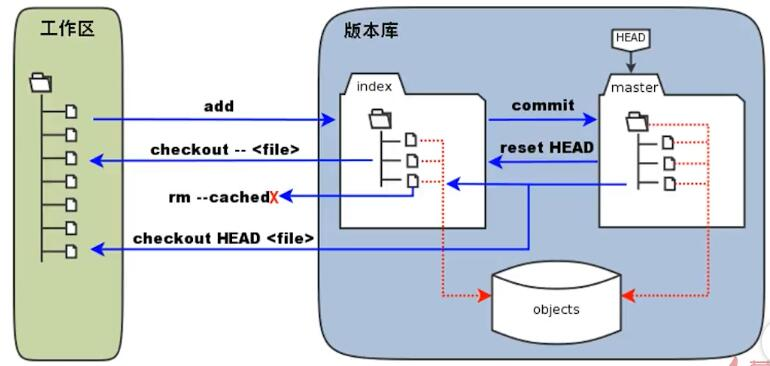

手摸手教程-git使用
作者：@dagaozi
VSS
SVN
git工作流
时光机
工作区回滚
git checkout -- 文件名
暂存区回滚
git reset 文件名
仓库回滚
git reset --hard 提交版本号(工作区/暂存区/仓库都回滚)
git reset --soft 提交版本号(只回滚仓库)
全都不要了
git rm 文件名
git commit -m "都不要了"
git工作流补充版
git分支管理
时间线
时间线
创建分支
git分支管理
创建分支: git branch feature_name
切换分支: git checkout feature_name
(等于上面两句: git checkout -b feature_name)
敲代码...提交: coding....add....commit......
切回主分支: git checkout master
合并分支: git merge feature_name
删除无用分支: git branch -d feature_name
远程仓库
获取远程仓库
- git clone 地址.....
添加远程仓库
- git remote add origin 地址.....
- git pull origin master
- git push -u origin master
生成SSH key
ssh-keygen -t rsa -C "dagaozi@163.com"
个人目录下的隐藏文件夹./ssh
验证是否联通: ssh -T git@github.com